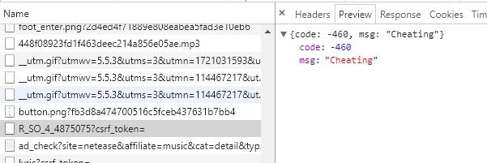

最近迷恋上了Python，觉得爬数据来分析的感觉很爽，哈哈哈哈，我就想看看上热评和评论长度有没有关系-。-
当然啦，‘纸上得来终觉浅，绝知此事要躬行’嘛，爬个数据玩玩才有意思，那就网易云音乐吧。。。
先说个好玩的，一直没换token啥的。。然后发现自己请求不到数据了。。被网易云音乐的服务器拉黑了吗。。
说说思路和遇到的问题吧。
思路呢，我的想法是从一首歌开始发散到附近歌曲，获取评论，然后存到本地，最后统计下各个评论个数，算一下平均数就知道了。
遇到问题不少，毕竟第一次玩嘛。。
首先，怎么拿到评论，最初的想法是从页面里直接拿div里的数据，后来发现不行，它是iframe里的，一开始拿不到的。 ok，你总得请求吧，那我去network里看请求还不行？我自己post查数据去。
第二个，post带啥信息呢？有个form表单的params和encSecKey，带上，不行，还说我cheating。。。找同学（感谢姚大侠老师的谆谆教诲0.0）请教，可能是因为 没头？好吧，带个header确实可以了o(╯□╰)o。话说，如果不是iframe里的，不带header可以吗？
第三个，拿到json里的值。习惯了js里的点取值形式。。这里不行。。非得['key']形式。。你看看，js晚发展就是有好处，兼收各家所长！
代码还是很简单的，引几个库（Python的库实在太多了。。），我用了requests发请求，json处理字典。代码github可见。最后是成功了，本地已经有数据了，但是可能由于请求太多，被暂时拉黑了。希望不是永久的。。明天再请求下
其实本来想做个从随机数的，加上songId，后来发现不行，404太多了，拿不到歌，那我就想去热歌榜拿id，但是又没拿到id，今天稍晚了，回头继续完善。
以上为1126update，日后再更